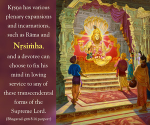

For one who always remembers Me without deviation, I am easy to obtain, O son of Pṛthā, because of his constant engagement in devotional service.

This verse especially describes the final destination attained by the unalloyed devotees who serve the Supreme Personality of Godhead in bhakti-yoga. Previous verses have mentioned four different kinds of devotees – the distressed, the inquisitive, those who seek material gain, and the speculative philosophers. Different processes of liberation have also been described: karma-yoga, jñāna-yoga and haṭha-yoga. The principles of these yoga systems have some bhakti added, but this verse particularly mentions pure bhakti-yoga, without any mixture of jñāna, karma or haṭha. As indicated by the word ananya-cetāḥ, in pure bhakti-yoga the devotee desires nothing but Kṛṣṇa. A pure devotee does not desire promotion to heavenly planets, nor does he seek oneness with the brahma-jyotir or salvation or liberation from material entanglement. A pure devotee does not desire anything. In the Caitanya-caritāmṛta the pure devotee is called niṣkāma, which means he has no desire for self-interest. Perfect peace belongs to him alone, not to them who strive for personal gain. Whereas a jñāna-yogī, karma-yogī or haṭha-yogī has his own selfish interests, a perfect devotee has no desire other than to please the Supreme Personality of Godhead. Therefore the Lord says that for anyone who is unflinchingly devoted to Him, He is easy to attain.
A pure devotee always engages in devotional service to Kṛṣṇa in one of His various personal features. Kṛṣṇa has various plenary expansions and incarnations, such as Rāma and Nṛsiṁha, and a devotee can choose to fix his mind in loving service to any of these transcendental forms of the Supreme Lord. Such a devotee meets with none of the problems that plague the practitioners of other yogas. Bhakti-yoga is very simple and pure and easy to perform. One can begin simply by chanting Hare Kṛṣṇa. The Lord is merciful to all, but as we have already explained, He is especially inclined toward those who always serve Him without deviation. The Lord helps such devotees in various ways. As stated in the Vedas (Kaṭha Upaniṣad 1.2.23), yam evaiṣa vṛṇute tena labhyas/ tasyaiṣa ātmā vivṛṇute tanuṁ svām: one who is fully surrendered and engaged in the devotional service of the Supreme Lord can understand the Supreme Lord as He is. And as stated in Bhagavad-gītā (10.10), dadāmi buddhi-yogaṁ tam: the Lord gives such a devotee sufficient intelligence so that ultimately the devotee can attain Him in His spiritual kingdom.
The special qualification of the pure devotee is that he is always thinking of Kṛṣṇa without deviation and without considering the time or place. There should be no impediments. He should be able to carry out his service anywhere and at any time. Some say that the devotee should remain in holy places like Vṛndāvana or some holy town where the Lord lived, but a pure devotee can live anywhere and create the atmosphere of Vṛndāvana by his devotional service. It was Śrī Advaita who told Lord Caitanya, “Wherever You are, O Lord – there is Vṛndāvana.”
As indicated by the words satatam and nityaśaḥ, which mean “always,” “regularly,” or “every day,” a pure devotee constantly remembers Kṛṣṇa and meditates upon Him. These are qualifications of the pure devotee, for whom the Lord is most easily attainable. Bhakti-yoga is the system that the Gītā recommends above all others. Generally, the bhakti-yogīs are engaged in five different ways: (1) śānta-bhakta, engaged in devotional service in neutrality; (2) dāsya-bhakta, engaged in devotional service as servant; (3) sakhya-bhakta, engaged as friend; (4) vātsalya-bhakta, engaged as parent; and (5) mādhurya-bhakta, engaged as conjugal lover of the Supreme Lord. In any of these ways, the pure devotee is always constantly engaged in the transcendental loving service of the Supreme Lord and cannot forget the Supreme Lord, and so for him the Lord is easily attained. A pure devotee cannot forget the Supreme Lord for a moment, and similarly the Supreme Lord cannot forget His pure devotee for a moment. This is the great blessing of the Kṛṣṇa conscious process of chanting the mahā-mantra – Hare Kṛṣṇa, Hare Kṛṣṇa, Kṛṣṇa Kṛṣṇa, Hare Hare/ Hare Rāma, Hare Rāma, Rāma Rāma, Hare Hare.